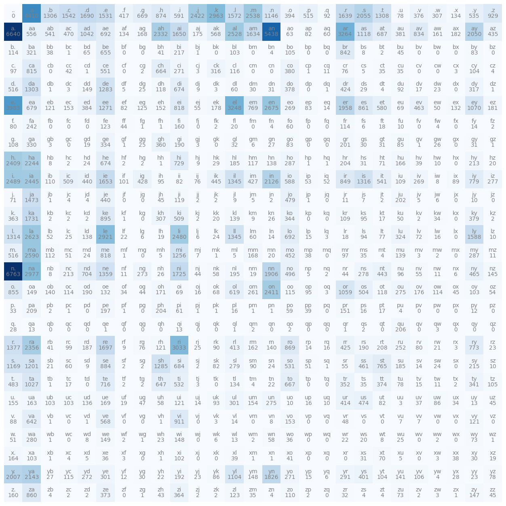
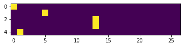

words = open('names.txt', 'r').read().splitlines()words[:10]['emma',
'olivia',
'ava',
'isabella',
'sophia',
'charlotte',
'mia',
'amelia',
'harper',
'evelyn']len(words)32033min(len(w) for w in words)2max(len(w) for w in words)15b = {}
for w in words: #each w is a word (a string)
chs = ['<S>'] + list(w) + ['<E>'] #chs is characters
for ch1, ch2 in zip(chs, chs[1:]): #zip takes two iterators and pairs them up
bigram = (ch1, ch2)
b[bigram] = b.get(bigram, 0) + 1 #creating dictionary to count all the bigrams and how likely they are to occur
#b.get says if the bigram is not in the dict we made for bigrams, add 1 (we start at 0)sorted(b.items(), key = lambda kv: -kv[1])[(('n', '<E>'), 6763),
(('a', '<E>'), 6640),
(('a', 'n'), 5438),
(('<S>', 'a'), 4410),
(('e', '<E>'), 3983),
(('a', 'r'), 3264),
(('e', 'l'), 3248),
(('r', 'i'), 3033),
(('n', 'a'), 2977),
(('<S>', 'k'), 2963),
(('l', 'e'), 2921),
(('e', 'n'), 2675),
(('l', 'a'), 2623),
(('m', 'a'), 2590),
(('<S>', 'm'), 2538),
(('a', 'l'), 2528),
(('i', '<E>'), 2489),
(('l', 'i'), 2480),
(('i', 'a'), 2445),
(('<S>', 'j'), 2422),
(('o', 'n'), 2411),
(('h', '<E>'), 2409),
(('r', 'a'), 2356),
(('a', 'h'), 2332),
(('h', 'a'), 2244),
(('y', 'a'), 2143),
(('i', 'n'), 2126),
(('<S>', 's'), 2055),
(('a', 'y'), 2050),
(('y', '<E>'), 2007),
(('e', 'r'), 1958),
(('n', 'n'), 1906),
(('y', 'n'), 1826),
(('k', 'a'), 1731),
(('n', 'i'), 1725),
(('r', 'e'), 1697),
(('<S>', 'd'), 1690),
(('i', 'e'), 1653),
(('a', 'i'), 1650),
(('<S>', 'r'), 1639),
(('a', 'm'), 1634),
(('l', 'y'), 1588),
(('<S>', 'l'), 1572),
(('<S>', 'c'), 1542),
(('<S>', 'e'), 1531),
(('j', 'a'), 1473),
(('r', '<E>'), 1377),
(('n', 'e'), 1359),
(('l', 'l'), 1345),
(('i', 'l'), 1345),
(('i', 's'), 1316),
(('l', '<E>'), 1314),
(('<S>', 't'), 1308),
(('<S>', 'b'), 1306),
(('d', 'a'), 1303),
(('s', 'h'), 1285),
(('d', 'e'), 1283),
(('e', 'e'), 1271),
(('m', 'i'), 1256),
(('s', 'a'), 1201),
(('s', '<E>'), 1169),
(('<S>', 'n'), 1146),
(('a', 's'), 1118),
(('y', 'l'), 1104),
(('e', 'y'), 1070),
(('o', 'r'), 1059),
(('a', 'd'), 1042),
(('t', 'a'), 1027),
(('<S>', 'z'), 929),
(('v', 'i'), 911),
(('k', 'e'), 895),
(('s', 'e'), 884),
(('<S>', 'h'), 874),
(('r', 'o'), 869),
(('e', 's'), 861),
(('z', 'a'), 860),
(('o', '<E>'), 855),
(('i', 'r'), 849),
(('b', 'r'), 842),
(('a', 'v'), 834),
(('m', 'e'), 818),
(('e', 'i'), 818),
(('c', 'a'), 815),
(('i', 'y'), 779),
(('r', 'y'), 773),
(('e', 'm'), 769),
(('s', 't'), 765),
(('h', 'i'), 729),
(('t', 'e'), 716),
(('n', 'd'), 704),
(('l', 'o'), 692),
(('a', 'e'), 692),
(('a', 't'), 687),
(('s', 'i'), 684),
(('e', 'a'), 679),
(('d', 'i'), 674),
(('h', 'e'), 674),
(('<S>', 'g'), 669),
(('t', 'o'), 667),
(('c', 'h'), 664),
(('b', 'e'), 655),
(('t', 'h'), 647),
(('v', 'a'), 642),
(('o', 'l'), 619),
(('<S>', 'i'), 591),
(('i', 'o'), 588),
(('e', 't'), 580),
(('v', 'e'), 568),
(('a', 'k'), 568),
(('a', 'a'), 556),
(('c', 'e'), 551),
(('a', 'b'), 541),
(('i', 't'), 541),
(('<S>', 'y'), 535),
(('t', 'i'), 532),
(('s', 'o'), 531),
(('m', '<E>'), 516),
(('d', '<E>'), 516),
(('<S>', 'p'), 515),
(('i', 'c'), 509),
(('k', 'i'), 509),
(('o', 's'), 504),
(('n', 'o'), 496),
(('t', '<E>'), 483),
(('j', 'o'), 479),
(('u', 's'), 474),
(('a', 'c'), 470),
(('n', 'y'), 465),
(('e', 'v'), 463),
(('s', 's'), 461),
(('m', 'o'), 452),
(('i', 'k'), 445),
(('n', 't'), 443),
(('i', 'd'), 440),
(('j', 'e'), 440),
(('a', 'z'), 435),
(('i', 'g'), 428),
(('i', 'm'), 427),
(('r', 'r'), 425),
(('d', 'r'), 424),
(('<S>', 'f'), 417),
(('u', 'r'), 414),
(('r', 'l'), 413),
(('y', 's'), 401),
(('<S>', 'o'), 394),
(('e', 'd'), 384),
(('a', 'u'), 381),
(('c', 'o'), 380),
(('k', 'y'), 379),
(('d', 'o'), 378),
(('<S>', 'v'), 376),
(('t', 't'), 374),
(('z', 'e'), 373),
(('z', 'i'), 364),
(('k', '<E>'), 363),
(('g', 'h'), 360),
(('t', 'r'), 352),
(('k', 'o'), 344),
(('t', 'y'), 341),
(('g', 'e'), 334),
(('g', 'a'), 330),
(('l', 'u'), 324),
(('b', 'a'), 321),
(('d', 'y'), 317),
(('c', 'k'), 316),
(('<S>', 'w'), 307),
(('k', 'h'), 307),
(('u', 'l'), 301),
(('y', 'e'), 301),
(('y', 'r'), 291),
(('m', 'y'), 287),
(('h', 'o'), 287),
(('w', 'a'), 280),
(('s', 'l'), 279),
(('n', 's'), 278),
(('i', 'z'), 277),
(('u', 'n'), 275),
(('o', 'u'), 275),
(('n', 'g'), 273),
(('y', 'd'), 272),
(('c', 'i'), 271),
(('y', 'o'), 271),
(('i', 'v'), 269),
(('e', 'o'), 269),
(('o', 'm'), 261),
(('r', 'u'), 252),
(('f', 'a'), 242),
(('b', 'i'), 217),
(('s', 'y'), 215),
(('n', 'c'), 213),
(('h', 'y'), 213),
(('p', 'a'), 209),
(('r', 't'), 208),
(('q', 'u'), 206),
(('p', 'h'), 204),
(('h', 'r'), 204),
(('j', 'u'), 202),
(('g', 'r'), 201),
(('p', 'e'), 197),
(('n', 'l'), 195),
(('y', 'i'), 192),
(('g', 'i'), 190),
(('o', 'd'), 190),
(('r', 's'), 190),
(('r', 'd'), 187),
(('h', 'l'), 185),
(('s', 'u'), 185),
(('a', 'x'), 182),
(('e', 'z'), 181),
(('e', 'k'), 178),
(('o', 'v'), 176),
(('a', 'j'), 175),
(('o', 'h'), 171),
(('u', 'e'), 169),
(('m', 'm'), 168),
(('a', 'g'), 168),
(('h', 'u'), 166),
(('x', '<E>'), 164),
(('u', 'a'), 163),
(('r', 'm'), 162),
(('a', 'w'), 161),
(('f', 'i'), 160),
(('z', '<E>'), 160),
(('u', '<E>'), 155),
(('u', 'm'), 154),
(('e', 'c'), 153),
(('v', 'o'), 153),
(('e', 'h'), 152),
(('p', 'r'), 151),
(('d', 'd'), 149),
(('o', 'a'), 149),
(('w', 'e'), 149),
(('w', 'i'), 148),
(('y', 'm'), 148),
(('z', 'y'), 147),
(('n', 'z'), 145),
(('y', 'u'), 141),
(('r', 'n'), 140),
(('o', 'b'), 140),
(('k', 'l'), 139),
(('m', 'u'), 139),
(('l', 'd'), 138),
(('h', 'n'), 138),
(('u', 'd'), 136),
(('<S>', 'x'), 134),
(('t', 'l'), 134),
(('a', 'f'), 134),
(('o', 'e'), 132),
(('e', 'x'), 132),
(('e', 'g'), 125),
(('f', 'e'), 123),
(('z', 'l'), 123),
(('u', 'i'), 121),
(('v', 'y'), 121),
(('e', 'b'), 121),
(('r', 'h'), 121),
(('j', 'i'), 119),
(('o', 't'), 118),
(('d', 'h'), 118),
(('h', 'm'), 117),
(('c', 'l'), 116),
(('o', 'o'), 115),
(('y', 'c'), 115),
(('o', 'w'), 114),
(('o', 'c'), 114),
(('f', 'r'), 114),
(('b', '<E>'), 114),
(('m', 'b'), 112),
(('z', 'o'), 110),
(('i', 'b'), 110),
(('i', 'u'), 109),
(('k', 'r'), 109),
(('g', '<E>'), 108),
(('y', 'v'), 106),
(('t', 'z'), 105),
(('b', 'o'), 105),
(('c', 'y'), 104),
(('y', 't'), 104),
(('u', 'b'), 103),
(('u', 'c'), 103),
(('x', 'a'), 103),
(('b', 'l'), 103),
(('o', 'y'), 103),
(('x', 'i'), 102),
(('i', 'f'), 101),
(('r', 'c'), 99),
(('c', '<E>'), 97),
(('m', 'r'), 97),
(('n', 'u'), 96),
(('o', 'p'), 95),
(('i', 'h'), 95),
(('k', 's'), 95),
(('l', 's'), 94),
(('u', 'k'), 93),
(('<S>', 'q'), 92),
(('d', 'u'), 92),
(('s', 'm'), 90),
(('r', 'k'), 90),
(('i', 'x'), 89),
(('v', '<E>'), 88),
(('y', 'k'), 86),
(('u', 'w'), 86),
(('g', 'u'), 85),
(('b', 'y'), 83),
(('e', 'p'), 83),
(('g', 'o'), 83),
(('s', 'k'), 82),
(('u', 't'), 82),
(('a', 'p'), 82),
(('e', 'f'), 82),
(('i', 'i'), 82),
(('r', 'v'), 80),
(('f', '<E>'), 80),
(('t', 'u'), 78),
(('y', 'z'), 78),
(('<S>', 'u'), 78),
(('l', 't'), 77),
(('r', 'g'), 76),
(('c', 'r'), 76),
(('i', 'j'), 76),
(('w', 'y'), 73),
(('z', 'u'), 73),
(('l', 'v'), 72),
(('h', 't'), 71),
(('j', '<E>'), 71),
(('x', 't'), 70),
(('o', 'i'), 69),
(('e', 'u'), 69),
(('o', 'k'), 68),
(('b', 'd'), 65),
(('a', 'o'), 63),
(('p', 'i'), 61),
(('s', 'c'), 60),
(('d', 'l'), 60),
(('l', 'm'), 60),
(('a', 'q'), 60),
(('f', 'o'), 60),
(('p', 'o'), 59),
(('n', 'k'), 58),
(('w', 'n'), 58),
(('u', 'h'), 58),
(('e', 'j'), 55),
(('n', 'v'), 55),
(('s', 'r'), 55),
(('o', 'z'), 54),
(('i', 'p'), 53),
(('l', 'b'), 52),
(('i', 'q'), 52),
(('w', '<E>'), 51),
(('m', 'c'), 51),
(('s', 'p'), 51),
(('e', 'w'), 50),
(('k', 'u'), 50),
(('v', 'r'), 48),
(('u', 'g'), 47),
(('o', 'x'), 45),
(('u', 'z'), 45),
(('z', 'z'), 45),
(('j', 'h'), 45),
(('b', 'u'), 45),
(('o', 'g'), 44),
(('n', 'r'), 44),
(('f', 'f'), 44),
(('n', 'j'), 44),
(('z', 'h'), 43),
(('c', 'c'), 42),
(('r', 'b'), 41),
(('x', 'o'), 41),
(('b', 'h'), 41),
(('p', 'p'), 39),
(('x', 'l'), 39),
(('h', 'v'), 39),
(('b', 'b'), 38),
(('m', 'p'), 38),
(('x', 'x'), 38),
(('u', 'v'), 37),
(('x', 'e'), 36),
(('w', 'o'), 36),
(('c', 't'), 35),
(('z', 'm'), 35),
(('t', 's'), 35),
(('m', 's'), 35),
(('c', 'u'), 35),
(('o', 'f'), 34),
(('u', 'x'), 34),
(('k', 'w'), 34),
(('p', '<E>'), 33),
(('g', 'l'), 32),
(('z', 'r'), 32),
(('d', 'n'), 31),
(('g', 't'), 31),
(('g', 'y'), 31),
(('h', 's'), 31),
(('x', 's'), 31),
(('g', 's'), 30),
(('x', 'y'), 30),
(('y', 'g'), 30),
(('d', 'm'), 30),
(('d', 's'), 29),
(('h', 'k'), 29),
(('y', 'x'), 28),
(('q', '<E>'), 28),
(('g', 'n'), 27),
(('y', 'b'), 27),
(('g', 'w'), 26),
(('n', 'h'), 26),
(('k', 'n'), 26),
(('g', 'g'), 25),
(('d', 'g'), 25),
(('l', 'c'), 25),
(('r', 'j'), 25),
(('w', 'u'), 25),
(('l', 'k'), 24),
(('m', 'd'), 24),
(('s', 'w'), 24),
(('s', 'n'), 24),
(('h', 'd'), 24),
(('w', 'h'), 23),
(('y', 'j'), 23),
(('y', 'y'), 23),
(('r', 'z'), 23),
(('d', 'w'), 23),
(('w', 'r'), 22),
(('t', 'n'), 22),
(('l', 'f'), 22),
(('y', 'h'), 22),
(('r', 'w'), 21),
(('s', 'b'), 21),
(('m', 'n'), 20),
(('f', 'l'), 20),
(('w', 's'), 20),
(('k', 'k'), 20),
(('h', 'z'), 20),
(('g', 'd'), 19),
(('l', 'h'), 19),
(('n', 'm'), 19),
(('x', 'z'), 19),
(('u', 'f'), 19),
(('f', 't'), 18),
(('l', 'r'), 18),
(('p', 't'), 17),
(('t', 'c'), 17),
(('k', 't'), 17),
(('d', 'v'), 17),
(('u', 'p'), 16),
(('p', 'l'), 16),
(('l', 'w'), 16),
(('p', 's'), 16),
(('o', 'j'), 16),
(('r', 'q'), 16),
(('y', 'p'), 15),
(('l', 'p'), 15),
(('t', 'v'), 15),
(('r', 'p'), 14),
(('l', 'n'), 14),
(('e', 'q'), 14),
(('f', 'y'), 14),
(('s', 'v'), 14),
(('u', 'j'), 14),
(('v', 'l'), 14),
(('q', 'a'), 13),
(('u', 'y'), 13),
(('q', 'i'), 13),
(('w', 'l'), 13),
(('p', 'y'), 12),
(('y', 'f'), 12),
(('c', 'q'), 11),
(('j', 'r'), 11),
(('n', 'w'), 11),
(('n', 'f'), 11),
(('t', 'w'), 11),
(('m', 'z'), 11),
(('u', 'o'), 10),
(('f', 'u'), 10),
(('l', 'z'), 10),
(('h', 'w'), 10),
(('u', 'q'), 10),
(('j', 'y'), 10),
(('s', 'z'), 10),
(('s', 'd'), 9),
(('j', 'l'), 9),
(('d', 'j'), 9),
(('k', 'm'), 9),
(('r', 'f'), 9),
(('h', 'j'), 9),
(('v', 'n'), 8),
(('n', 'b'), 8),
(('i', 'w'), 8),
(('h', 'b'), 8),
(('b', 's'), 8),
(('w', 't'), 8),
(('w', 'd'), 8),
(('v', 'v'), 7),
(('v', 'u'), 7),
(('j', 's'), 7),
(('m', 'j'), 7),
(('f', 's'), 6),
(('l', 'g'), 6),
(('l', 'j'), 6),
(('j', 'w'), 6),
(('n', 'x'), 6),
(('y', 'q'), 6),
(('w', 'k'), 6),
(('g', 'm'), 6),
(('x', 'u'), 5),
(('m', 'h'), 5),
(('m', 'l'), 5),
(('j', 'm'), 5),
(('c', 's'), 5),
(('j', 'v'), 5),
(('n', 'p'), 5),
(('d', 'f'), 5),
(('x', 'd'), 5),
(('z', 'b'), 4),
(('f', 'n'), 4),
(('x', 'c'), 4),
(('m', 't'), 4),
(('t', 'm'), 4),
(('z', 'n'), 4),
(('z', 't'), 4),
(('p', 'u'), 4),
(('c', 'z'), 4),
(('b', 'n'), 4),
(('z', 's'), 4),
(('f', 'w'), 4),
(('d', 't'), 4),
(('j', 'd'), 4),
(('j', 'c'), 4),
(('y', 'w'), 4),
(('v', 'k'), 3),
(('x', 'w'), 3),
(('t', 'j'), 3),
(('c', 'j'), 3),
(('q', 'w'), 3),
(('g', 'b'), 3),
(('o', 'q'), 3),
(('r', 'x'), 3),
(('d', 'c'), 3),
(('g', 'j'), 3),
(('x', 'f'), 3),
(('z', 'w'), 3),
(('d', 'k'), 3),
(('u', 'u'), 3),
(('m', 'v'), 3),
(('c', 'x'), 3),
(('l', 'q'), 3),
(('p', 'b'), 2),
(('t', 'g'), 2),
(('q', 's'), 2),
(('t', 'x'), 2),
(('f', 'k'), 2),
(('b', 't'), 2),
(('j', 'n'), 2),
(('k', 'c'), 2),
(('z', 'k'), 2),
(('s', 'j'), 2),
(('s', 'f'), 2),
(('z', 'j'), 2),
(('n', 'q'), 2),
(('f', 'z'), 2),
(('h', 'g'), 2),
(('w', 'w'), 2),
(('k', 'j'), 2),
(('j', 'k'), 2),
(('w', 'm'), 2),
(('z', 'c'), 2),
(('z', 'v'), 2),
(('w', 'f'), 2),
(('q', 'm'), 2),
(('k', 'z'), 2),
(('j', 'j'), 2),
(('z', 'p'), 2),
(('j', 't'), 2),
(('k', 'b'), 2),
(('m', 'w'), 2),
(('h', 'f'), 2),
(('c', 'g'), 2),
(('t', 'f'), 2),
(('h', 'c'), 2),
(('q', 'o'), 2),
(('k', 'd'), 2),
(('k', 'v'), 2),
(('s', 'g'), 2),
(('z', 'd'), 2),
(('q', 'r'), 1),
(('d', 'z'), 1),
(('p', 'j'), 1),
(('q', 'l'), 1),
(('p', 'f'), 1),
(('q', 'e'), 1),
(('b', 'c'), 1),
(('c', 'd'), 1),
(('m', 'f'), 1),
(('p', 'n'), 1),
(('w', 'b'), 1),
(('p', 'c'), 1),
(('h', 'p'), 1),
(('f', 'h'), 1),
(('b', 'j'), 1),
(('f', 'g'), 1),
(('z', 'g'), 1),
(('c', 'p'), 1),
(('p', 'k'), 1),
(('p', 'm'), 1),
(('x', 'n'), 1),
(('s', 'q'), 1),
(('k', 'f'), 1),
(('m', 'k'), 1),
(('x', 'h'), 1),
(('g', 'f'), 1),
(('v', 'b'), 1),
(('j', 'p'), 1),
(('g', 'z'), 1),
(('v', 'd'), 1),
(('d', 'b'), 1),
(('v', 'h'), 1),
(('h', 'h'), 1),
(('g', 'v'), 1),
(('d', 'q'), 1),
(('x', 'b'), 1),
(('w', 'z'), 1),
(('h', 'q'), 1),
(('j', 'b'), 1),
(('x', 'm'), 1),
(('w', 'g'), 1),
(('t', 'b'), 1),
(('z', 'x'), 1)]import torchN = torch.zeros((27, 27), dtype=torch.int32)chars = sorted(list(set(''.join(words)))) #''.join(words) makes the words into a giant string
#set() removes duplicates, and we turn that set into a list with list()
#sorted sorts the list from a to z
stoi = {s:i+1 for i,s in enumerate(chars)} #mapping character to the integer (string to integer, stoi)
#enumerate gives the index position
stoi['.'] = 0
itos = {i:s for s,i in stoi.items()}
for w in words:
chs = ['.'] + list(w) + ['.']
for ch1, ch2 in zip(chs, chs[1:]):
ix1 = stoi[ch1]
ix2 = stoi[ch2]
N[ix1, ix2] += 1
import matplotlib.pyplot as plt
%matplotlib inline
plt.figure(figsize=(16,16))
plt.imshow(N, cmap='Blues')
for i in range(27):
for j in range(27):
chstr = itos[i] + itos[j]
plt.text(j, i, chstr, ha="center", va="bottom", color='gray')
plt.text(j, i, N[i, j].item(), ha="center", va="top", color='gray')
plt.axis('off');
Above shows a matrix of how many times one character follows (is after) the next character. So, for example, b follows g zero times. ‘b’ follows ‘e’ 655 times. The goal is to sample from this matrix for the character-level language model, but to do this, we need to convert it into probabilities, which we do in the code chunk after the next code chunk.
N[0] #indexing into the 0th row and grabbing all the columns from the above matrix
#results in a one-dimensional arraytensor([ 0, 4410, 1306, 1542, 1690, 1531, 417, 669, 874, 591, 2422, 2963,
1572, 2538, 1146, 394, 515, 92, 1639, 2055, 1308, 78, 376, 307,
134, 535, 929], dtype=torch.int32)p = N[0].float()
p = p / p.sum() #normalizing the counts to create a probability distribution
ptensor([0.0000, 0.1377, 0.0408, 0.0481, 0.0528, 0.0478, 0.0130, 0.0209, 0.0273,
0.0184, 0.0756, 0.0925, 0.0491, 0.0792, 0.0358, 0.0123, 0.0161, 0.0029,
0.0512, 0.0642, 0.0408, 0.0024, 0.0117, 0.0096, 0.0042, 0.0167, 0.0290])g = torch.Generator().manual_seed(2147483647) #seeds a generator that gives us object g
ix = torch.multinomial(p, num_samples=1, replacement=True, generator=g).item()
itos[ix]'j'g = torch.Generator().manual_seed(2147483647)
p = torch.rand(3, generator=g)
p = p / p.sum()
ptensor([0.6064, 0.3033, 0.0903])torch.multinomial(p, num_samples=100, replacement=True, generator=g)
#takes the torch tensor of probability distributions
#need to specify replacement as True bc multinomial is False by default
#produces a bunch of samples from the prob dist
#based on the previous chunk's tensor, the probability of the first element is 60%
#tensor([1, 1, 2, 0, 0, 2, 1, 1, 0, 0, 0, 1, 1, 0, 0, 1, 1, 0, 0, 1, 0, 2, 0, 0,
1, 0, 0, 1, 0, 0, 0, 1, 1, 1, 0, 1, 1, 0, 0, 1, 1, 1, 0, 1, 1, 0, 1, 1,
0, 2, 0, 0, 0, 0, 0, 0, 0, 0, 0, 0, 1, 1, 0, 0, 0, 0, 0, 0, 0, 0, 1, 0,
0, 1, 0, 0, 0, 0, 0, 0, 0, 1, 2, 0, 0, 0, 0, 0, 0, 1, 0, 0, 2, 0, 1, 0,
0, 1, 1, 1])p.shapetorch.Size([3])P.shapeNameError: name 'P' is not definedP.sum(1, keepdim=True).shapeNameError: name 'P' is not defined# 27, 27
# 27, 1P.sum(1).shapeNameError: name 'P' is not defined# 27, 27
# 1, 27P = (N+1).float()
P /= P.sum(1, keepdims=True)g = torch.Generator().manual_seed(2147483647)
for i in range(5):
out = []
ix = 0
while True:
p = P[ix]
ix = torch.multinomial(p, num_samples=1, replacement=True, generator=g).item()
out.append(itos[ix])
if ix == 0:
break
print(''.join(out))mor.
axx.
minaymoryles.
kondlaisah.
anchshizarie.# GOAL: maximize likelihood of the data w.r.t. model parameters (statistical modeling)
# equivalent to maximizing the log likelihood (because log is monotonic)
# equivalent to minimizing the negative log likelihood
# equivalent to minimizing the average negative log likelihood
# log(a*b*c) = log(a) + log(b) + log(c)log_likelihood = 0.0
n = 0
for w in words:
#for w in ["andrejq"]:
chs = ['.'] + list(w) + ['.']
for ch1, ch2 in zip(chs, chs[1:]):
ix1 = stoi[ch1]
ix2 = stoi[ch2]
prob = P[ix1, ix2]
logprob = torch.log(prob)
log_likelihood += logprob
n += 1
#print(f'{ch1}{ch2}: {prob:.4f} {logprob:.4f}')
print(f'{log_likelihood=}')
nll = -log_likelihood
print(f'{nll=}')
print(f'{nll/n}')log_likelihood=tensor(-564996.8125, grad_fn=<AddBackward0>)
nll=tensor(564996.8125, grad_fn=<NegBackward0>)
2.476470470428467# create the training set of bigrams (x,y)
xs, ys = [], []
for w in words[:1]:
chs = ['.'] + list(w) + ['.']
for ch1, ch2 in zip(chs, chs[1:]):
ix1 = stoi[ch1]
ix2 = stoi[ch2]
print(ch1, ch2)
xs.append(ix1)
ys.append(ix2)
xs = torch.tensor(xs)
ys = torch.tensor(ys). e
e m
m m
m a
a .xstensor([ 0, 5, 13, 13, 1])ystensor([ 5, 13, 13, 1, 0])import torch.nn.functional as F
xenc = F.one_hot(xs, num_classes=27).float()
xenctensor([[1., 0., 0., 0., 0., 0., 0., 0., 0., 0., 0., 0., 0., 0., 0., 0., 0., 0.,
0., 0., 0., 0., 0., 0., 0., 0., 0.],
[0., 0., 0., 0., 0., 1., 0., 0., 0., 0., 0., 0., 0., 0., 0., 0., 0., 0.,
0., 0., 0., 0., 0., 0., 0., 0., 0.],
[0., 0., 0., 0., 0., 0., 0., 0., 0., 0., 0., 0., 0., 1., 0., 0., 0., 0.,
0., 0., 0., 0., 0., 0., 0., 0., 0.],
[0., 0., 0., 0., 0., 0., 0., 0., 0., 0., 0., 0., 0., 1., 0., 0., 0., 0.,
0., 0., 0., 0., 0., 0., 0., 0., 0.],
[0., 1., 0., 0., 0., 0., 0., 0., 0., 0., 0., 0., 0., 0., 0., 0., 0., 0.,
0., 0., 0., 0., 0., 0., 0., 0., 0.]])xenc.shapetorch.Size([5, 27])plt.imshow(xenc)<matplotlib.image.AxesImage at 0x7fa0dab44fa0>
xenc.dtypetorch.float32W = torch.randn((27, 1))
xenc @ Wtensor([[-0.2003, -2.3711, -0.9466, 0.5369, -0.0949, -1.7872, -0.9038, 0.8194,
0.6926, 0.0114, -1.5301, 0.6077, -1.2056, 1.8605, -1.3012, -0.0301,
-2.1611, -0.0538, -0.0133, -0.3629, 0.5254, -0.0080, 1.1602, 1.9851,
0.4976, 0.7351, -0.6373],
[-0.4422, 0.5024, 1.3514, -0.4085, -0.7854, -1.2568, -0.4558, 0.1466,
-0.4460, 1.2748, -0.6367, 0.6403, -0.5617, -0.3060, 1.6771, -1.4814,
-2.7395, 0.3876, 0.3970, 1.5577, -0.1995, -0.1397, -1.3045, 0.4294,
1.2557, 0.8007, 0.5450],
[-0.2680, -0.2640, 0.4591, 0.0338, 0.7478, 1.2757, -0.9842, 0.1799,
0.0824, -0.5646, -0.3657, -0.8358, -1.7654, 0.5008, -1.7455, -0.8160,
-2.2721, 0.9713, -1.0734, 0.3115, -0.2506, 0.0757, 0.9332, 1.6536,
1.2306, 0.1231, -0.2530],
[-0.2680, -0.2640, 0.4591, 0.0338, 0.7478, 1.2757, -0.9842, 0.1799,
0.0824, -0.5646, -0.3657, -0.8358, -1.7654, 0.5008, -1.7455, -0.8160,
-2.2721, 0.9713, -1.0734, 0.3115, -0.2506, 0.0757, 0.9332, 1.6536,
1.2306, 0.1231, -0.2530],
[ 0.1949, -1.1315, 0.9479, -0.6382, -0.4422, -0.6489, 0.6576, -1.9004,
2.0254, 1.2617, -1.7238, 1.2971, -0.6925, -0.3873, 0.7874, -0.8088,
0.5746, -0.5263, -0.5928, 0.1419, 1.0683, -0.1760, -0.3507, -0.5358,
0.1470, 1.5682, -1.0393]])logits = xenc @ W # log-counts
counts = logits.exp() # equivalent N
probs = counts / counts.sum(1, keepdims=True)
probstensor([[0.0205, 0.0023, 0.0097, 0.0428, 0.0228, 0.0042, 0.0101, 0.0568, 0.0500,
0.0253, 0.0054, 0.0460, 0.0075, 0.1609, 0.0068, 0.0243, 0.0029, 0.0237,
0.0247, 0.0174, 0.0423, 0.0248, 0.0799, 0.1822, 0.0412, 0.0522, 0.0132],
[0.0154, 0.0397, 0.0928, 0.0160, 0.0110, 0.0068, 0.0152, 0.0278, 0.0154,
0.0860, 0.0127, 0.0456, 0.0137, 0.0177, 0.1286, 0.0055, 0.0016, 0.0354,
0.0357, 0.1141, 0.0197, 0.0209, 0.0065, 0.0369, 0.0844, 0.0535, 0.0414],
[0.0212, 0.0213, 0.0439, 0.0287, 0.0586, 0.0994, 0.0104, 0.0332, 0.0301,
0.0158, 0.0192, 0.0120, 0.0047, 0.0458, 0.0048, 0.0123, 0.0029, 0.0733,
0.0095, 0.0379, 0.0216, 0.0299, 0.0705, 0.1450, 0.0950, 0.0314, 0.0215],
[0.0212, 0.0213, 0.0439, 0.0287, 0.0586, 0.0994, 0.0104, 0.0332, 0.0301,
0.0158, 0.0192, 0.0120, 0.0047, 0.0458, 0.0048, 0.0123, 0.0029, 0.0733,
0.0095, 0.0379, 0.0216, 0.0299, 0.0705, 0.1450, 0.0950, 0.0314, 0.0215],
[0.0289, 0.0077, 0.0613, 0.0126, 0.0153, 0.0124, 0.0459, 0.0036, 0.1801,
0.0839, 0.0042, 0.0869, 0.0119, 0.0161, 0.0522, 0.0106, 0.0422, 0.0140,
0.0131, 0.0274, 0.0692, 0.0199, 0.0167, 0.0139, 0.0275, 0.1140, 0.0084]])probs[0]tensor([0.0205, 0.0023, 0.0097, 0.0428, 0.0228, 0.0042, 0.0101, 0.0568, 0.0500,
0.0253, 0.0054, 0.0460, 0.0075, 0.1609, 0.0068, 0.0243, 0.0029, 0.0237,
0.0247, 0.0174, 0.0423, 0.0248, 0.0799, 0.1822, 0.0412, 0.0522, 0.0132])probs[0].shapetorch.Size([27])probs[0].sum()tensor(1.)# (5, 27) @ (27, 27) -> (5, 27)# SUMMARY ------------------------------>>>>xstensor([ 0, 5, 13, 13, 1])ystensor([ 5, 13, 13, 1, 0])# randomly initialize 27 neurons' weights. each neuron receives 27 inputs
g = torch.Generator().manual_seed(2147483647)
W = torch.randn((27, 27), generator=g)xenc = F.one_hot(xs, num_classes=27).float() # input to the network: one-hot encoding
logits = xenc @ W # predict log-counts
counts = logits.exp() # counts, equivalent to N
probs = counts / counts.sum(1, keepdims=True) # probabilities for next character
# btw: the last 2 lines here are together called a 'softmax'probs.shapetorch.Size([5, 27])
nlls = torch.zeros(5)
for i in range(5):
# i-th bigram:
x = xs[i].item() # input character index
y = ys[i].item() # label character index
print('--------')
print(f'bigram example {i+1}: {itos[x]}{itos[y]} (indexes {x},{y})')
print('input to the neural net:', x)
print('output probabilities from the neural net:', probs[i])
print('label (actual next character):', y)
p = probs[i, y]
print('probability assigned by the net to the the correct character:', p.item())
logp = torch.log(p)
print('log likelihood:', logp.item())
nll = -logp
print('negative log likelihood:', nll.item())
nlls[i] = nll
print('=========')
print('average negative log likelihood, i.e. loss =', nlls.mean().item())--------
bigram example 1: .e (indexes 0,5)
input to the neural net: 0
output probabilities from the neural net: tensor([0.0607, 0.0100, 0.0123, 0.0042, 0.0168, 0.0123, 0.0027, 0.0232, 0.0137,
0.0313, 0.0079, 0.0278, 0.0091, 0.0082, 0.0500, 0.2378, 0.0603, 0.0025,
0.0249, 0.0055, 0.0339, 0.0109, 0.0029, 0.0198, 0.0118, 0.1537, 0.1459])
label (actual next character): 5
probability assigned by the net to the the correct character: 0.012286253273487091
log likelihood: -4.3992743492126465
negative log likelihood: 4.3992743492126465
--------
bigram example 2: em (indexes 5,13)
input to the neural net: 5
output probabilities from the neural net: tensor([0.0290, 0.0796, 0.0248, 0.0521, 0.1989, 0.0289, 0.0094, 0.0335, 0.0097,
0.0301, 0.0702, 0.0228, 0.0115, 0.0181, 0.0108, 0.0315, 0.0291, 0.0045,
0.0916, 0.0215, 0.0486, 0.0300, 0.0501, 0.0027, 0.0118, 0.0022, 0.0472])
label (actual next character): 13
probability assigned by the net to the the correct character: 0.018050702288746834
log likelihood: -4.014570713043213
negative log likelihood: 4.014570713043213
--------
bigram example 3: mm (indexes 13,13)
input to the neural net: 13
output probabilities from the neural net: tensor([0.0312, 0.0737, 0.0484, 0.0333, 0.0674, 0.0200, 0.0263, 0.0249, 0.1226,
0.0164, 0.0075, 0.0789, 0.0131, 0.0267, 0.0147, 0.0112, 0.0585, 0.0121,
0.0650, 0.0058, 0.0208, 0.0078, 0.0133, 0.0203, 0.1204, 0.0469, 0.0126])
label (actual next character): 13
probability assigned by the net to the the correct character: 0.026691533625125885
log likelihood: -3.623408794403076
negative log likelihood: 3.623408794403076
--------
bigram example 4: ma (indexes 13,1)
input to the neural net: 13
output probabilities from the neural net: tensor([0.0312, 0.0737, 0.0484, 0.0333, 0.0674, 0.0200, 0.0263, 0.0249, 0.1226,
0.0164, 0.0075, 0.0789, 0.0131, 0.0267, 0.0147, 0.0112, 0.0585, 0.0121,
0.0650, 0.0058, 0.0208, 0.0078, 0.0133, 0.0203, 0.1204, 0.0469, 0.0126])
label (actual next character): 1
probability assigned by the net to the the correct character: 0.07367684692144394
log likelihood: -2.6080667972564697
negative log likelihood: 2.6080667972564697
--------
bigram example 5: a. (indexes 1,0)
input to the neural net: 1
output probabilities from the neural net: tensor([0.0150, 0.0086, 0.0396, 0.0100, 0.0606, 0.0308, 0.1084, 0.0131, 0.0125,
0.0048, 0.1024, 0.0086, 0.0988, 0.0112, 0.0232, 0.0207, 0.0408, 0.0078,
0.0899, 0.0531, 0.0463, 0.0309, 0.0051, 0.0329, 0.0654, 0.0503, 0.0091])
label (actual next character): 0
probability assigned by the net to the the correct character: 0.0149775305762887
log likelihood: -4.201204299926758
negative log likelihood: 4.201204299926758
=========
average negative log likelihood, i.e. loss = 3.7693049907684326# --------- !!! OPTIMIZATION !!! yay --------------xstensor([ 0, 5, 13, 13, 1])ystensor([ 5, 13, 13, 1, 0])# randomly initialize 27 neurons' weights. each neuron receives 27 inputs
g = torch.Generator().manual_seed(2147483647)
W = torch.randn((27, 27), generator=g, requires_grad=True)# forward pass
xenc = F.one_hot(xs, num_classes=27).float() # input to the network: one-hot encoding
logits = xenc @ W # predict log-counts
counts = logits.exp() # counts, equivalent to N
probs = counts / counts.sum(1, keepdims=True) # probabilities for next character
loss = -probs[torch.arange(5), ys].log().mean()print(loss.item())3.6891887187957764# backward pass
W.grad = None # set to zero the gradient
loss.backward()W.data += -0.1 * W.grad# --------- !!! OPTIMIZATION !!! yay, but this time actually --------------# create the dataset
xs, ys = [], []
for w in words:
chs = ['.'] + list(w) + ['.']
for ch1, ch2 in zip(chs, chs[1:]):
ix1 = stoi[ch1]
ix2 = stoi[ch2]
xs.append(ix1)
ys.append(ix2)
xs = torch.tensor(xs)
ys = torch.tensor(ys)
num = xs.nelement()
print('number of examples: ', num)
# initialize the 'network'
g = torch.Generator().manual_seed(2147483647)
W = torch.randn((27, 27), generator=g, requires_grad=True)number of examples: 228146# gradient descent
for k in range(1):
# forward pass
xenc = F.one_hot(xs, num_classes=27).float() # input to the network: one-hot encoding
logits = xenc @ W # predict log-counts
counts = logits.exp() # counts, equivalent to N
probs = counts / counts.sum(1, keepdims=True) # probabilities for next character
loss = -probs[torch.arange(num), ys].log().mean() + 0.01*(W**2).mean()
print(loss.item())
# backward pass
W.grad = None # set to zero the gradient
loss.backward()
# update
W.data += -50 * W.grad2.481828451156616# finally, sample from the 'neural net' model
g = torch.Generator().manual_seed(2147483647)
for i in range(5):
out = []
ix = 0
while True:
# ----------
# BEFORE:
#p = P[ix]
# ----------
# NOW:
xenc = F.one_hot(torch.tensor([ix]), num_classes=27).float()
logits = xenc @ W # predict log-counts
counts = logits.exp() # counts, equivalent to N
p = counts / counts.sum(1, keepdims=True) # probabilities for next character
# ----------
ix = torch.multinomial(p, num_samples=1, replacement=True, generator=g).item()
out.append(itos[ix])
if ix == 0:
break
print(''.join(out))mor.
axx.
minaymoryles.
kondlaisah.
anchthizarie.